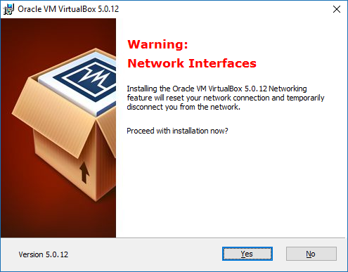

Virtual Box warning during installation
During installation of virtual box, this warning is designed to cause maximum fright
Warning: Network Interfaces Installing the Oracle VM VirtualBox 5.0.12 Networking feature will reset your network connection and temporarily disconnect you from the network.
Proceed with installation now?
Yes or NO

Like the badass that I am, I clicked yes. If I did go offline I didn't notice. It was over in less than 2 minutes.